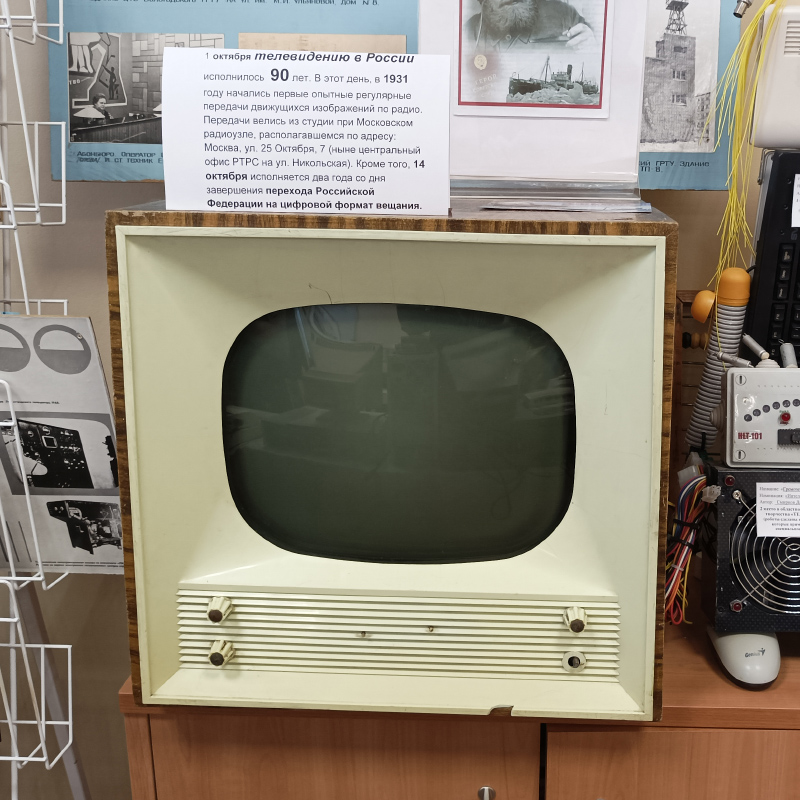
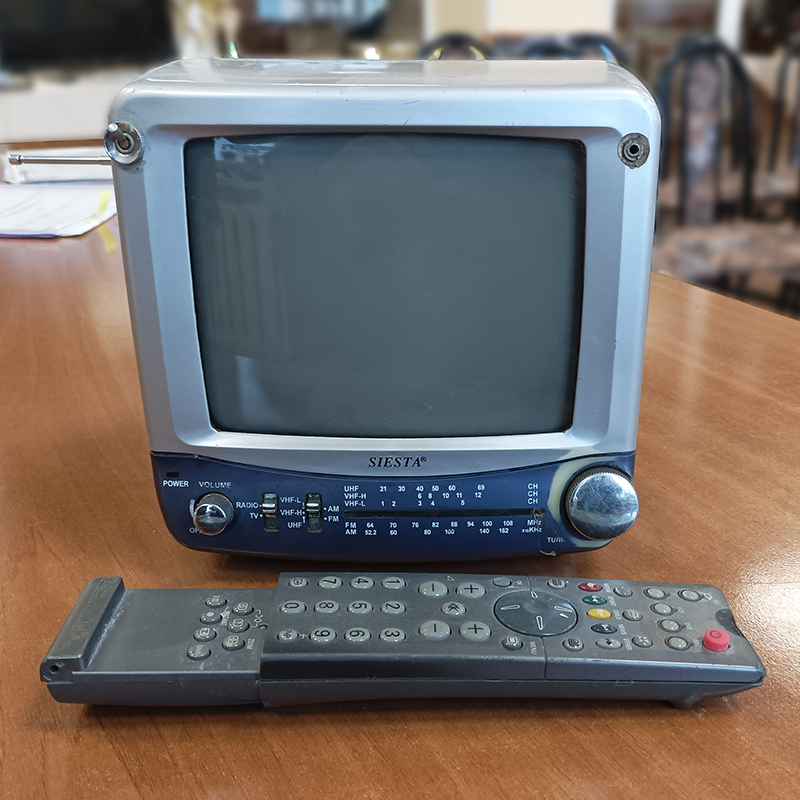
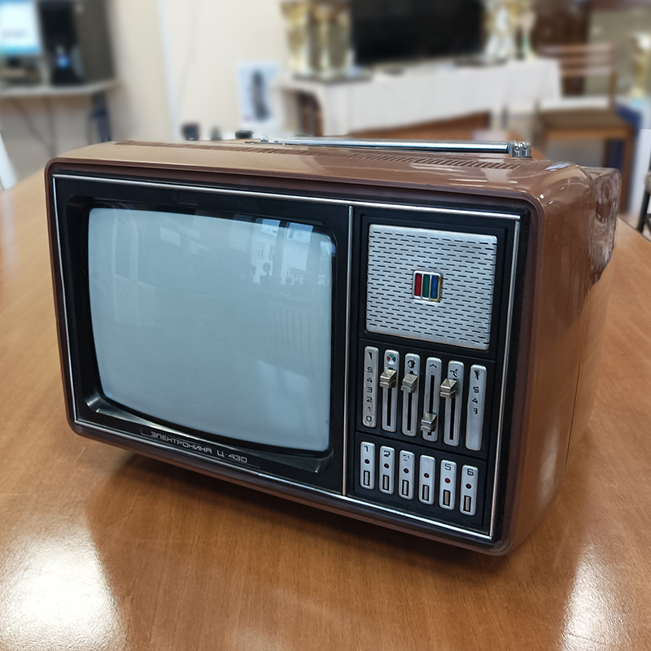
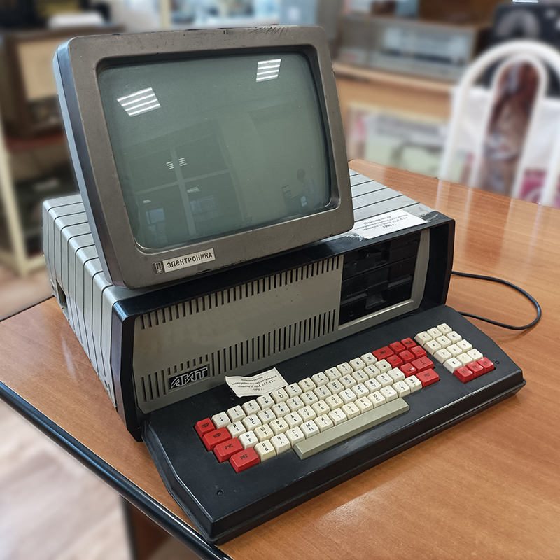
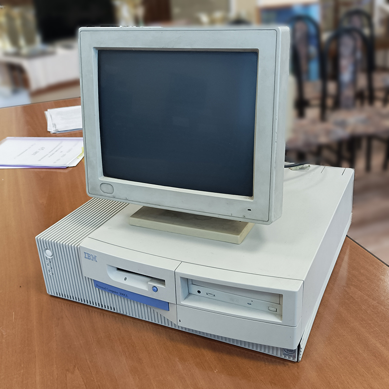

Televisor "Record"
Fabricado en la planta de Aleksandrov y en la fábrica de Voronezh "Electrosignal" desde mediados de la década de 1950. "Record V-312" se convirtió en uno de los televisores más comunes en la Unión Soviética. Se produjo desde 1975 hasta mediados de la década de 1980. En 1983 comenzó la producción del televisor "Record VC-311/D". Este fue el primer modelo de televisor a color con una pantalla de 51 centímetros en diagonal (anteriormente solo había de 25, 32, 40, 59, 61 y 67).
Televisor "Siesta J1410"
Televisor portátil blanco y negro Siesta J-1410 con radio incorporado. Diagonal de 5.5 pulgadas. Puede conectarse en un automóvil con un adaptador.


Receptor de televisión "Electronica Ts-430"
Diseñado para recibir programas en cualquiera de los 12 canales en el rango de onda media (MW) y en el modelo con el índice 'D' en cualquiera de los canales del rango de onda decimétrica (DMV). Los televisores se fabricaron en una carcasa de poliestireno resistente a los impactos con varias opciones de diseño. Utiliza un tubo de rayos catódicos. En la fuente de alimentación se aplica un circuito electrónico de protección que desconecta automáticamente el televisor de la red en caso de sobrecargas y lo vuelve a encender cuando se eliminan. Resolución de 250 líneas. Potencia de salida máxima de 0.6 W. Rango de frecuencias reproducibles del canal de audio de 315 Hz a 6300 Hz.
Computadora "Agat"
La primera computadora personal (microcomputadora) de serie soviética. "Agat" es una computadora universal de 8 bits diseñada para su uso en educación pública. Desarrollada entre 1981 y 1983 en el Instituto de Investigación Científica de Sistemas de Cómputo (NIIVK) como un equivalente soviético de las computadoras estadounidenses. Memoria ROM de 2 KB (almacenaba el sistema operativo "System Monitor"), RAM de 64-128 KB para modelos de serie. Podía ampliarse mediante la instalación de módulos de memoria adicionales (hasta 640 KB para el modelo Agat-9). Se utilizaba un esquema de conmutación bancaria. Procesador: 8 bits, 6502. Frecuencia de reloj de 1 MHz. Rendimiento de 500,000 operaciones por segundo.


Computadora "IBM PCjr"
Computadora personal de la corporación IBM, el primer intento de la compañía de ingresar al mercado de las computadoras personales en el hogar. Debido a ciertos defectos de diseño, falta de compatibilidad con el IBM PC y errores en la política de marketing, el modelo no tuvo éxito comercial. La computadora se produjo en dos variantes: el modelo 4860-004 con 64 KB de RAM, con un costo de 669 USD y el 4860-067 con 128 KB de RAM y una unidad de disco de 5.25", con un costo de 1269 USD. Memoria RAM de 64-128 KB en la placa base, ampliable a 640-736 KB con una tarjeta de memoria. ROM de 24 KB con BIOS y BASIC en casete.